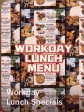
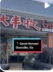
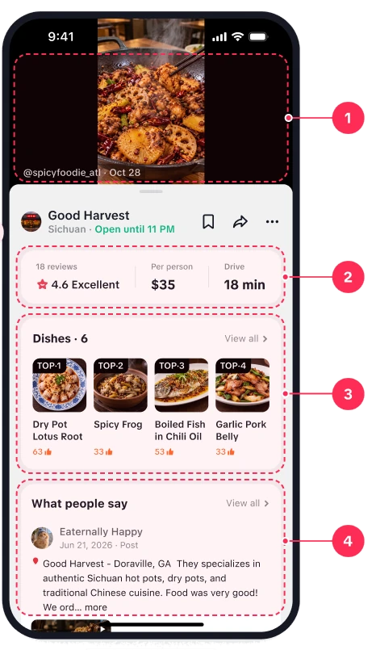
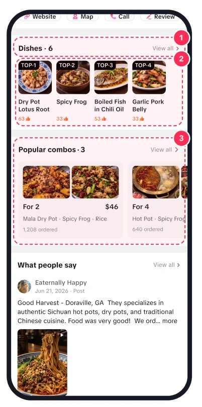
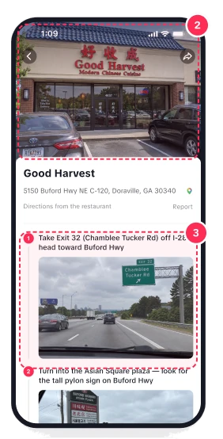
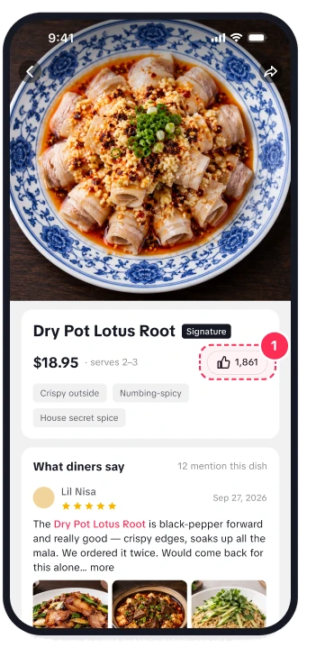
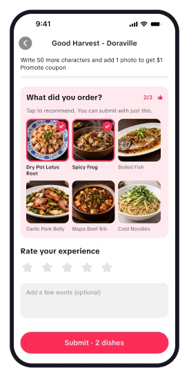
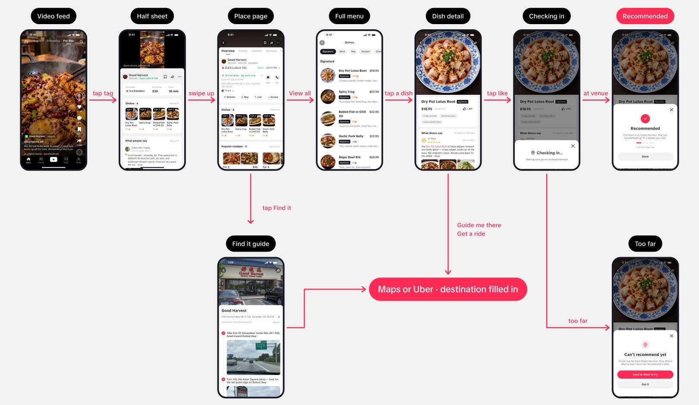
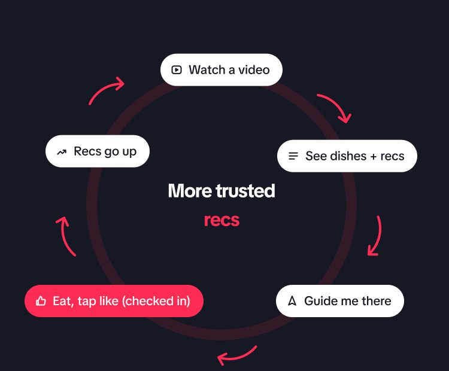

TikTok × Local ServicesDesign Test · Task 2Dining
The Video Makes You Hungry.
The Page Helps You Decide.
TikTok wins discovery. The decision still happens somewhere else.
of Gen Z discover new restaurants on TikTok, their #1 channel
Toast survey, Oct 2025, 1,466 US adultsof consumers read reviews before choosing a local business
BrightLocal Local Consumer Review Survey 2026only trust reviews from the last three months
BrightLocal 2026won’t use a business with fewer than 20 reviews
BrightLocal 2026Search-led choice
User arrives with a need, then searches
- Search “Sichuan near me”
- Compare stars and review counts
- Read menus on the restaurant site
- Decide, then open Maps
Google MapsYelpRednote
Content-led choice
A video creates the craving first
- A dish in a video makes you hungry
- Tap the place tag
- Need: what to order, what it costs, can I trust it
- Today: leave TikTok to answer these
TikTok
The opportunity
Where TikTok Local Services sits today
Local Services lives inside the main app, same account, same feed. Every flow starts from scrolling a video.

Good Harvest
★4.6 Excellent (18) ›
What people sayView all ›
Eternally HappyJun 21, 2026 · Post
Good Harvest – Doraville, GA. They specialize in authentic Sichuan hot pots, dry pots, and traditional Chinese cuisine. Food was very good! We ord… more

The place page today
It lists the restaurant’s basics. It doesn’t help you decide.
Rating, hours, price range, distance, four equal buttons and What people say.
- Opens full screenThe video stops. The context that created the craving is gone.
- Four equal buttonsWebsite · Map · Call · Review. No primary action, no next step.
Hover a note, or tap the buttons in the screen.
US local today
Local feedPlace tagsTikTok GOMust Eat
Discovery is covered. Nothing yet helps the decision after one tap on a tag.
The precedent we build on
TikTok Shop half sheet
The sheet slides up while the video keeps playing: decision signals and one red CTA. Local doesn’t use it yet.
Why it matters for the business
The tag tap is the most engaged moment in local
Today it ends in Google Maps. The value is keeping the decision, and the user, inside TikTok.
Users arrive with a very specific expectation
That dish, that atmosphere, from that video. The place page does not know what they came for.
Inside TikTok
- 01Scroll a videoCrave a dish
- 02Tap the place tagFull-screen page, the video stops
- 03Basic info + reviewsNo menu, no prices
Leaves TikTok
- 04Leave TikTokMenu and reviews on another app
- 05Copy the addressInto Maps or a ride app
Problem statement
The page shows the restaurant, not the food.
So the decision moves to Google Maps, Rednote or Yelp, and TikTok loses the moment it created.
What we observed
- Diners look for the menu first, before reviews. Some open the restaurant’s website just to find it.P1–P4
- Chinese-American diners check Rednote for reviews they trust, then Google Maps for the address.P1
- Once a place is chosen, the next action is immediate: directions or a ride.P2 · P3
- Price questions in the US are about the final total, tax and tip included.Brief
- Price and distance decide “worth the trip”. Today they are on the page, but easy to miss.P4
- Reviews with other diners’ food photos are trusted more than a star rating.P4
What diners check before deciding
- What to order
- What it costs
- How far, how long the wait
- Is the dish worth it
What they told us
Four Atlanta diners who find restaurants on TikTok. Before and after the prototype.
It met all my needs. I didn’t hesitate, I went straight to directions.
P3After using the prototype · whole loop in TikTok
P2before · today’s TikTok“I look at the dishes first. If it’s the one I want, then I check the rating.”
P3before · today’s TikTok“The info isn’t thorough enough, so I jump between apps.”
P3before · today’s TikTok“I search the name in TikTok, then go straight to Google Maps.”
P1before · today’s TikTok“I check Rednote for real reviews before I trust a place.”
P2after · prototype“It gives more of what I want. The menu entries are hard to tap on a small screen.”
P4after · prototype“If everyone can recommend without eating there, it’s not that credible.”
Three words
No photos of food, no menu
The place page shows the restaurant, not the dishes.
No prices, no per-dish reviews
Users can’t tell if it’s worth it.
2–3 other apps
The decision moves out, and the craving the video created is lost on the way.
Stage we focus on · Decision-makingNot discovery (the feed does that). Not booking (Must Eat and OpenTable do that).
Not more restaurants. More confidence to go to this one.
Show users more restaurants
Discovery is already TikTok’s strength. More options don’t help someone who already wants this place.
Make users sure about this one
Answer what to order, what it costs and whether the recommendations are real, right on the place page.
Need
Know what to order
Dishes, combos, price and portion on the place page
System 1 · Dish informationEvidenceP1–P4 all looked for the menu before reviews.
Moat
Trust the number
Only diners who have been there can recommend
System 3 · Trusted recsEvidence“If everyone can recommend without eating there, it’s not that credible.” P4
Short path
Go in one tap
Find it guide, Get a ride and Guide me there on every screen
System 2 · Getting thereEvidenceP3 copied the address into Maps once decided.
Part 2 · Solution
Trust the recs. Know what to order. Know how to get there.
Interactive prototype · jamiechou2004.github.io/tiktok-test-demo
Put what diners actually check on the place page, over the video, and keep the way out one tap away.
Primary goal
Decide right where the craving starts
Two things must hold: the video context is kept, and the information is enough.
System 3
Trust the recommendations
Only diners who have been there can recommend a dish, so the count is real.
System 1
Enough detail to decide
Dish module, full menu and dish detail: what to order, what it costs, what diners say.
System 2
Find it, go anytime
A step-by-step guide to the door, plus Get a ride and Guide me there on every screen.
Design boundary
Scrolling stays untouched
We only change what happens after the tap on a place tag. The feed, the video and the action rail are TikTok’s as they are.
Content model
Menus from the restaurant, recs from diners
The restaurant provides dishes, combos and prices. The recommend count on each dish comes from diners who have been there.
What’s newTwo mechanisms TikTok doesn’t have today
The place page opens over the video
The video that created the craving stays on screen while the user decides. Today the page replaces it.
Recommendations only from people who were there
A like on a dish counts only after a check-in. The number becomes something people can trust, and it grows with every visit.
Tap the tag, the sheet comes up, the video keeps playing

This is a working prototype. Tap inside the phone, or hover a note to find it on screen.
Start on the video.Tap the place tag, the way a diner would after the video made them hungry.
- Video keeps playing aboveThe user never loses the thing that made them want to go. Same pattern as TikTok Shop, nothing new to learn.
- Stats capsule: rating · hours · per personThe three numbers that decide “go or not” at a glance. Per person, not a price range, because US diners ask what the night will cost.
- Dishes before reviewsEvery participant looked for the menu first. TOP badges and recs counts; View all opens the full menu.
- What people say staysReviews are not removed, they move below the dishes.
- Swipe the sheet up for the full page. Tap the video to go back.
- Tabs jump to what you needOverview · Dishes · Combos · Reviews stay pinned. The menu is one tap away.
- Rating and open status at a glance“4.6 Excellent · Open until 11 PM”. The go or no-go basics, before anything else.
- Getting there lives in the first sectionDrive time and wait first, then the address with Find it, Ride and Call. No scrolling back up.
- Dishes and combos come nextThe same module as the half sheet, now with combos and View all for the full menu. Reviews follow below.
- Today: opens full screenThe video stops. The context that created the craving is gone.
- Today: four equal buttonsWebsite · Map · Call · Review. No primary action, no next step.
Edge case · No dish data
Fall back to today’s layout
Basic info and reviews, no empty module. The sheet never shows a hole where dishes should be.
Edge case · Closed now
Guide me there stays
The button shows the next opening time, so the user decides for themselves whether to go later.
Two heights
Half to glance, full to decide
Swipe up for the full place page with tabs. Swipe down to close and return to the video.
Enough detail to decide
Three screens. Each one answers a question the place page could not.

This is a working prototype. Tap inside the phone, or hover a note to find it on screen.
- Owner-maintained menu“Updated 2 days ago” shows it’s current. View all opens the full menu.
- Photo first, then likesReadable at a glance. A like count from visitors beats a 4.3 for one dish.
- Combos for 2 and 4What people order together, with the total price for the table.
- Tap View all for the menu, or a dish for its detail.
- Sticky category chipsTap to jump, scroll to highlight. One page, nothing hidden behind tabs.
- Rows that answer it allPhoto, price, likes and a taste note. Full-width, easy to tap.
- Scroll the menu and watch the chips follow.
- Big photo, price, servesA thumbnail isn’t enough to commit. “Serves 2–3” sizes the order.
- Taste in three wordsCrispy outside, numbing-spicy, house spice. For first-timers.
- Reviews about this dishOnly reviews that name the dish, with the name highlighted.
- Keep browsing, keep the exitMore dishes below. Get a ride and Guide me there stay pinned.
Interaction · After P2
Whole tile is tappable
Photo and name both open the dish. Menu rows are full-width targets. Fixed after P2 could not hit the entries.
Interaction · Two ways in
Dishes tab vs View all
From the Dishes tab the main tabs stay (two-level nav), because the user may go back to Overview. From View all the main tabs hide, because the user is in menu mode.
Interaction · Scrollspy
Chips follow the scroll
On both menus the current category highlights as you scroll, and tapping a chip scrolls to it. A short lock so the highlight does not flicker.
Find the place, go anytime
Leaving is the last step, not the first. Two parts: a guide to the door, and the exit on every screen.
Find it
A step-by-step guide to the door

- Entry under the addressWhere the user already looks for “how do I get there”.
- Storefront firstSo they recognise the place when they arrive.
- Numbered steps with real photosExit sign, plaza sign, storefront. In a plaza full of Asian restaurants, Maps gets you to the parking lot, not the door. Borrowed from Meituan’s store guide, rebuilt in TikTok components.
Always on
Two buttons on every screen
Pinned onPlace pageDish videosFull menuDish detail
Why two buttons, not one
Driving and riding are different modes. One primary + one secondary matches TikTok Shop’s “Add to cart + Buy now”.
Why the primary is Guide me there
Every platform’s primary CTA reflects its goal. Meituan: buy the deal. Rednote: post a check-in. TikTok Shop: buy now. Google Maps: directions. Ours: turn the craving into a visit.
Why we don’t build navigation
Google and Apple are better at it. We hand off after the decision, not before, with the destination filled in and the choice remembered.
Get a ride shows a price
“from $20 · Uber / Lyft” answers the last question before going, right on the button.
Only diners who have been there can recommend
The recs count is what people decide by, so it has to be real. A like is the cheapest way to collect it, and a check-in makes sure it comes from a visit.
Why a like, not a review or a video
Like
- Cost
- 1 tap
- Volume
- Most people do it
- Signal
- Points at one dish
Review
- Cost
- 50+ characters, a photo
- Volume
- Few people do it
- Signal
- Dish name buried in text
Video
- Cost
- Film, edit, post
- Volume
- Fewest people
- Signal
- Dish has to be recognised
Who can recommend · any one of these
At the restaurant
Location read once, at the moment of the tap. Same as Rednote check-in.
Arrived by Guide me there or Get a ride
The trip ended at this restaurant.
Posted a video tagged here
Already proves the visit.
Tap like on a dish

This is a working prototype. Tap inside the phone, or hover a note to find it on screen.
Where are you?
- Tap likeThe thumbs-up on the dish detail.
- Checking inLocation is read once, at the moment of the tap.
- Too far: save it instead“Can’t recommend yet.” Offer Save to Want to try.
- At the restaurant: countedOne of three recs for this visit. A 4th like shows “3 of 3 used”.
When we ask · after the meal

Tap the notification, pick up to three dishes, submit.
People rarely come back to a dish page after eating. So we ask once, at the right time.
- Trigger
- A few hours after Guide me there or Get a ride ends at the restaurant.
- Action
- Tap the dishes you had. No writing needed. The written review below it stays as it is today, for people who want to say more.
- Counted as
- A visit-verified rec for each dish tapped, up to three.
Hypothesis, not yet verified
A one-tap message after a real visit collects far more dish recs than waiting for people to like a dish on their own.
How we’d check: message tap rate, recs per visit, and how many restaurants reach 20+ recs.
Rules that keep the number honest
dishes per visit
Picking makes a rec mean something.
recommend per dish per visit
Repeated taps do not stack.
with a photo or video
Stronger proof counts more.
days
Recent recs rank higher.
Honest limit
A check-in proves the visit, not the bite.
- They were at the restaurant
- They ate this exact dish
Across hundreds of likes, the few that miss even out.
Visited and ate itVisited, ate something else
Every state the user can land in, and what triggers it
Has dish data
Trigger
Tap the place tag on a video
Result
Half sheet with rating, hours, per person and TOP dishes. Video keeps playing.
No dish data yet
Trigger
Same tap, but the restaurant hasn’t added its menu yet
Result
No Dishes section, not an empty box. Rating, price and reviews still show, like today’s page.
Likes a dish, too far
Trigger
Tap like; location says too far
Result
“Can’t recommend yet.” Offer Save to Want to try instead.
Likes a dish at the restaurant
Trigger
Same tap, user is at the restaurant
Result
Counted. 1 of 3 for this visit; count goes up by one.
| User action | What happens | Why |
|---|---|---|
| 1Tap place tag | Half sheet slides up, video keeps playing | Keep the context that created the craving |
| 2Swipe sheet up | Full place page with tabs | Half to glance, full to decide |
| 3Swipe sheet down | Back to the video | Exit is always one gesture |
| 4Tap View all | Full menu, main tabs hidden, category chips stick | User is in menu mode |
| 5Tap a dish | Dish detail with price, serves, per-dish reviews | A thumbnail is not enough to commit |
| 6Tap like on a dish | Location read once, then counted or declined | Only visits count, so the number can be trusted |
| 74th like in one visit | “3 of 3 used” | Picking makes a rec mean something |
| 8Tap Guide me there / Get a ride | Open Maps or Uber with the destination filled in | Hand off only after the decision |
Red numbers are marked on the screens above. Grey ones happen outside them: swiping the sheet down, and tapping Guide me there / Get a ride (shown in System 2).
The whole journey, from a video to the door

Always an exit
Leave or go, in one gesture.
Swipe down, back to the video
Works on the half sheet, the full page and the menu.
Guide me there and Get a ride, always pinned
On the place page, the menu and every dish.
Every visit makes the next decision easier

For diners
Decide faster next time
More recs per dish, from people who were there.
For TikTok
The decision stays in the app
Every trip that starts here can come back as a rec or a video.
For restaurants
Good dishes get found
Recs reward what is good now, not who paid.
The same recs, beyond the place page · concept
Top dish on the place tag
“Good Harvest · Top dish: Dry Pot Lotus Root” on the anchor, before anyone taps.
Recs on restaurant cards
Rank nearby places by dishes people actually recommend.
Search by dish
“Lotus root near me” returns places where that dish has the most recs.
Want to try list
Saved dishes come back when you are nearby at mealtime.
What a reviewer will ask, answered first
Reviewer
Google Maps already has menus and reviews. Why build this in TikTok?
Our answer
Craving happens on a videoTikTok knows the dishGoogle only drives
Google doesn’t know which dish made them want to go. The decision should happen where the intent was created, and Google handles the last step, the drive.
Reviewer
Isn’t this just Meituan’s dish module copied over?
Our answer
Same pattern, new logicPrimary action is GoNo coupons
Meituan’s module sells group-buy deals. Ours gives decision information. US diners pay after the meal, with tax and tip, so a coupon price wouldn’t answer their question.
Reviewer
How is this different from Must Eat?
Our answer
Must Eat: where to eatOurs: is it worth itComplementary
Must Eat is curated lists in three metros. This works after one specific video, for any tagged restaurant anywhere.
Reviewer
Why a half sheet instead of a better full page?
Our answer
The video is the evidenceTwo heightsSame as TikTok Shop
If the page replaces the video, users lose what they’re judging by. Half to glance, full to decide, the same pattern as TikTok Shop, so nothing new to learn.
Reviewer
How do you know the recommend count is real?
Our answer
Been there to countChecked once at the tap3 dishes per visit
Only diners who have been there can recommend. The like checks location once at the tap; arriving by Guide me there or Get a ride, or posting a tagged video, also counts. Three dishes per visit, one rec per dish.
Reviewer
Why would anyone come back to recommend?
Our answer
One message after the tripOne tap per dishHypothesis to test
We don’t wait for them to. A few hours after the trip, one message asks which dishes they had. One tap per dish, no writing. This is a hypothesis we would test after launch.
Part 3 · Validation
The whole decision now happens in TikTok.
4 participantsBefore: today’s TikTokAfter: the prototypeSame target tasks
Same person, same task, two versions
Atlanta diners who find restaurants on TikTok. Each did the same four tasks on today’s TikTok first, then on the prototype. We watched where they went and what they said.
What we recorded
- Apps opened
- Left TikTok or not
- Where they hesitated
- What they said
Counts, not percentages. Four people shows direction, not a rate.
Why one iteration
Direction was settled. The test checks one thing.
Does the added information help people decide better?
- P1Session
- P2SessionTap targets
- P3Session
- P4SessionLikes label
- Final
Apps needed to decide
1–2 fewer apps
found what to order and what it costs without leaving TikTok
tasks completed.
Apps each participant needed to decide
Checks Rednote for real reviews before trusting a place.
TikTokRednoteGoogle Maps
3 apps to decide
TikTokMaps · hand-off
Found dishes, prices and reviews on the place page.
Wanted reviews and dish prices before going.
TikTokGoogle MapsLyft
3 apps to decide
TikTokLyft · hand-off
Decided without leaving. Both were on the page. Flagged the tap targets.
Searched the name in TikTok, then jumped straight to Google Maps.
TikTokGoogle Maps
2 apps to decide
TikTokMaps · hand-off
Whole loop in TikTok. “It met all my needs, I didn’t hesitate.”
Opened the restaurant’s website to see the menu.
TikTokRestaurant website
2 apps to decide
TikTokUber / Lyft · hand-off
Found the menu, portion size and dish photos on the place page, then tapped Get a ride.
All 16 tasks were completed. Four findings changed the design.
Target tasks
| Task | P1 | P2 | P3 | P4 |
|---|---|---|---|---|
| Find what dishes they have | ||||
| Check what it costs | ||||
| Read what diners say | ||||
| Get directions or a ride |
What we found · what we changed
- P2Whole tile is tappable
Missed the small tap targets
- P1–P4Dishes sit above reviews
Looked for the menu first
- P3Exit pinned at the bottom
Copied the address out
- P4Number + thumbs-up
Didn’t get what “recs” meant
What builds trust
Detail, not just more reviews
Diners trust reviewers who know the cuisine, and exact dish descriptions. Per-dish reviews answer both.
Honest limits
Four people, tasks we set
Enough to show the direction, not a rate. “Found” means the info was there, not that users would look unprompted.
How we’d know it works after launch, and where it goes next
North star
Share of place-tag taps that end in a trip
Guide me there or Get a ride: the closest thing to “decided, and went”.
Guardrails
The sheet must not cost the feed more than it helps local.
Next